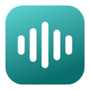

FluidVoice is ready
Talk into any text box on the web: email, chats, documents and forms. FluidVoice adds the punctuation you say, drops the “um”s and types the text where your cursor is.
How to use it
- Click in a text box on any website.
- Press Alt+Shift+D (⌥ Option⇧ ShiftD on a Mac), or click the small microphone that appears in the box.
- The first time on each website, Chrome asks to use your microphone. Choose Allow.
- Talk. Say “comma”, “period”, “question mark” or “new line” where you want them.
- Press the shortcut again or click Done. Press Esc to cancel.
Try it here
Good to know
Pin the extension so its menu is one click away: click the puzzle-piece icon next to the address bar, then the pin next to FluidVoice Dictation.
It works on websites, not in desktop apps like Word, or on Chrome’s own pages. For typing into any Mac app, use the FluidVoice Mac app.
Your audio goes to Chrome’s online speech service (Google; Microsoft in Edge). Password fields are never used.